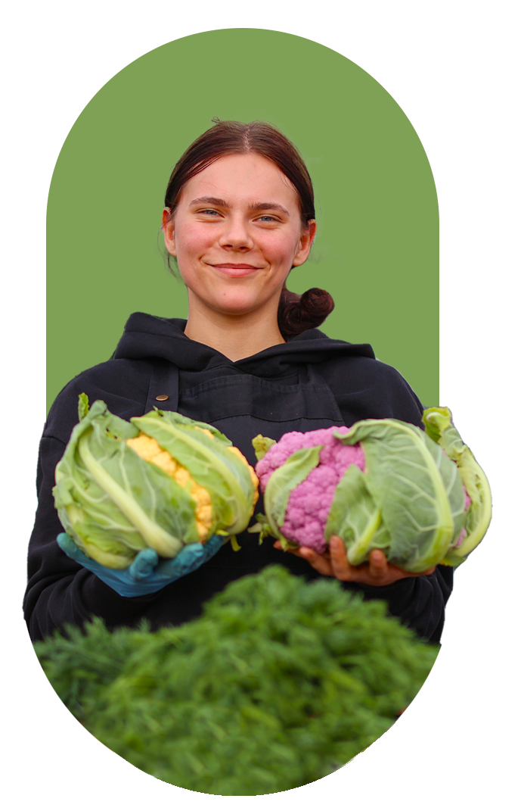
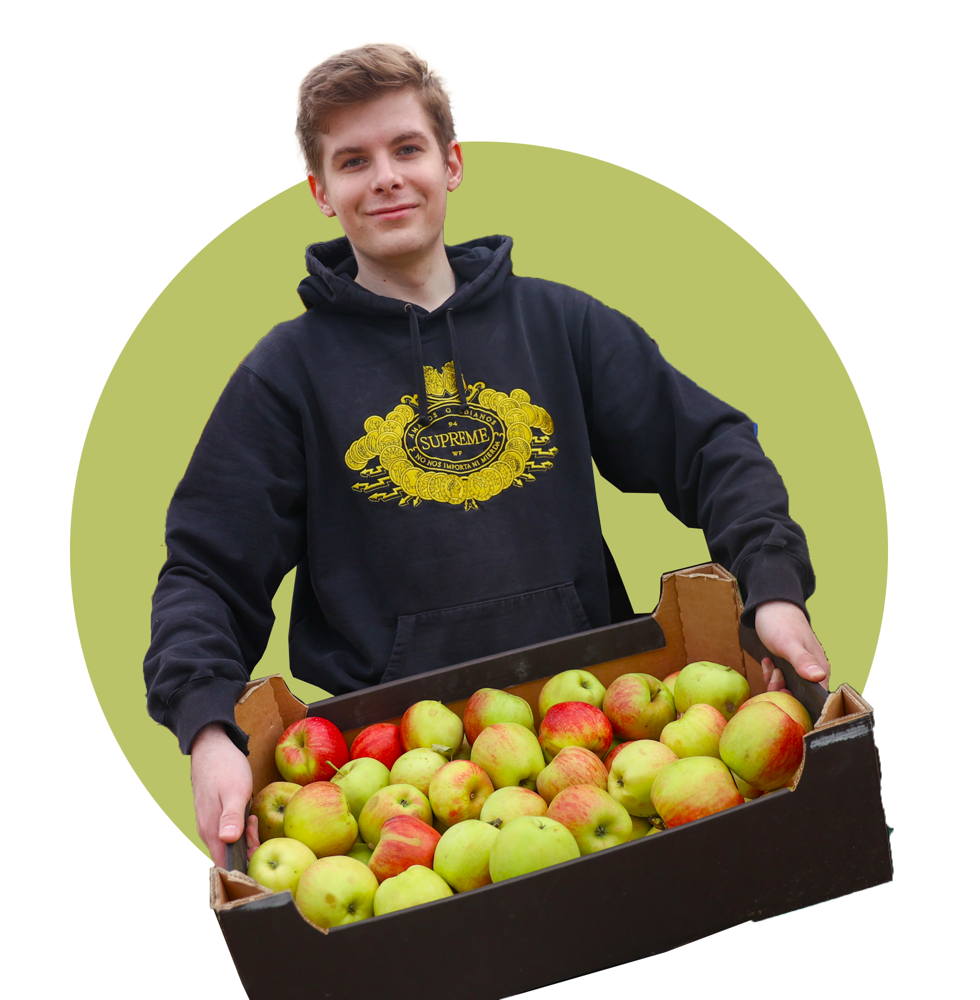
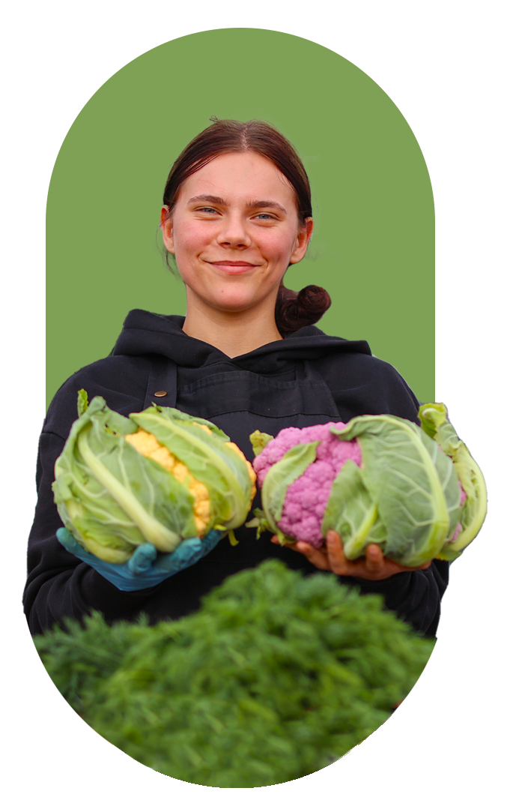
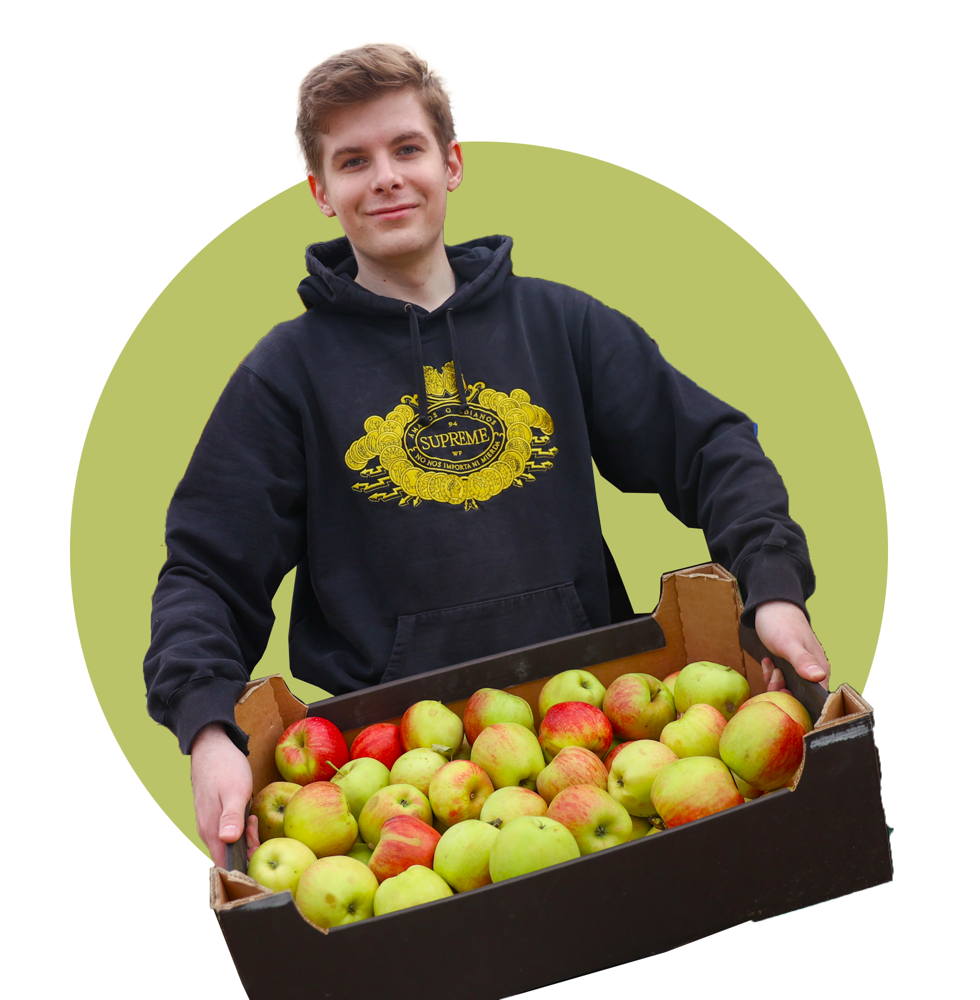

В Беларуси стартовали сельхозярмарки! Что там продают, почем и какие отзывы покупателей и продавцов? За покупками пошли и во всех подробностях узнали наши корреспонденты. А еще собрали всю важную информацию в «Живом репортаже» - здесь адреса, время работы и самые свежие цифры.
 



| Район | Место проведения | День проведения | Режим работы |
|---|---|---|---|
| Заводской район |
ул. Нестерова, 49 автостоянка ТЦ «Симакс» |
Суббота, воскресенье | с 10:00 до 16:00 |
| Ленинский район |
пр-т Рокоссовского, 114 (автомобильная парковка) |
Суббота, воскресенье | с 10:00 до 16:00 |
| Московский район |
ул. Я. Брыля площадка вблизи дома № 5 |
Суббота, воскресенье | с 10:00 до 17:00 |
| Октябрьский район |
ул. Чкалова, 7 ул. Барамзиной, 10А |
Суббота, воскресенье | с 10:00 до 16:00 |
| Партизанский район |
бульвар Тракторостроителей | Суббота, воскресенье | с 10:00 до 16:00 |
| Первомайский район |
ул. Руссиянова, 1 | Суббота, воскресенье | с 10:00 до 17:00 |
| Советский район |
парк культуры и отдыха «Парк дружбы народов» |
Суббота, воскресенье | с 10:00 до 16:00 |
| Фрунзенский район |
ул. Притыцкого, 27 открытая площадка у ГУ «Ледовый Дворец спорта Минской области» |
Суббота, воскресенье | с 10:00 до 16:00 |
| Центральный район |
ул. Каховская, 31 площадка возле кинотеатра «Киев» |
Суббота, воскресенье | с 08:00 до 16:00 |
| Городская ярмарка | Площадка у ГКСУ «Чижовка-арена» ул. Ташкентская, 19 |
Суббота, воскресенье | с 08:00 до 16:00 |
| Дворец спорта | Площадка у «РЦОП «Дворец спорта» | 20-21 сентября | с 09:00 до 17:00 |
| Дворец спорта | Площадка у «РЦОП «Дворец спорта» | 18-19 октября, 1-2 ноября |
с 08:00 до 16:00 |
На ярмарке у "Чижовка-Арены" цены радуют каждого покупателя. От свежих овощей до домашних солений - все по доступным ценам прямо от производителей.
«Привезли все, что надо для борща. У нас личное подсобное хозяйство, земли – около пяти гектаров. Выращиваем перец, баклажаны, помидоры, разные виды капусты, морковь, лук, свеклу. Все это и предлагаем посетителям. На ярмарке работаем не первый год. Что привлекает? Толковая организация, можно спокойно приехать, без проблем занять место. Да и поток посетителей хороший – очереди выстраиваются».
— Илья Хрипачев, Слуцкий район
70 метров торговых рядов с самыми свежими овощами

Квашеная капуста, соленые огурчики, маринованный чеснок
Свежее мясо и домашние колбаски по народным рецептам
Липовый, гречишный, майский мед от потомственных пчеловодов
Сочные ягоды – дары белорусской земли
В Минтруда рассказали, что покупки на дом пожилым людям и инвалидам могут доставить, и пояснили, что для этого нужно сделать. Для получения помощи достаточно связаться со своим территориальным центром социального обслуживания населения.
Те, кто проживает в Минске, могут позвонить на короткий номер 139. При обращении необходимо оставить заявку. Специалисты центра примут её и сообщат, в какое время будет осуществляться подвоз.
В день ярмарки можно найти на её территории волонтера. Чаще всего это представители БРСМ в яркой форме. Он сопроводит пожилого человека, загрузит его покупки в автомобиль и отвезет по названному адресу.
В Минтруда подчеркивают: вся помощь абсолютно бесплатна. Не придется платить ни за доставку, ни за услуги волонтеров.
Как корреспондент СБ отправился на медведя

Глазами журналиста на передовой
Чем удивляют новые школы в Беларуси?
Что нового в правилах дорожного движения?

80-летие завершения Второй мировой войны

Как адаптируются первокурсники
ВО ИМЯ ИСТОРИИ
Новые граждане республики